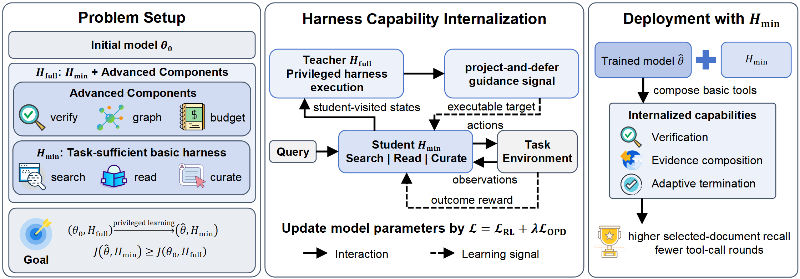
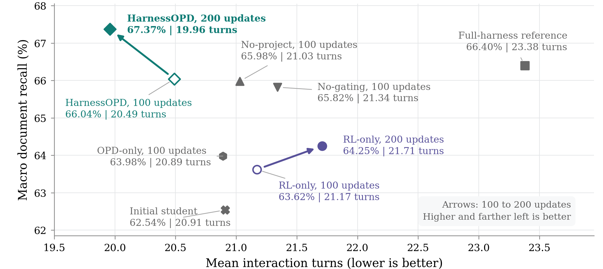

Submission status: under review at WWW (not yet accepted). Updated November 3, 2026.
The question: if the system is stronger, is the model stronger too?
A search agent's performance depends on more than the model. Harness components such as evidence checking, context management, and multi-hop organization can also improve decisions. Once those components are removed, the gains may disappear.
HarnessOPD asks whether the behavioral advantage of a stronger harness can be partly kept in the model parameters, so that deployment uses only a simplified harness. “Simplified” still keeps the basic tools needed to finish the task. The model is not asked to work without tools.
Method: learn from a stronger execution process, not from copied tool calls
Teacher and student share the same model backbone and differ only in the available harness. The student always samples under the simplified harness. The teacher runs advanced components on an isolated copy of the student's state and provides extra guidance.

The hard part is that the teacher can take actions the student cannot execute. We use two alignment paths:
- Project: when an advanced-component effect can be mapped, convert it into a basic action the student can take.
- Defer: when it cannot be mapped directly, let the teacher continue privately until it produces a basic action that is still valid for the saved student state.
These branches do not rewrite the student's real trajectory. Training combines aligned on-policy distillation with outcome reinforcement learning: the former gives local decision guidance, the latter gives feedback from whole-task performance. At deployment, the teacher's advanced components are removed.
Results: higher recall and fewer interactions under simplified deployment
Under GPT-OSS-20B + Harness-1, after 200 training updates, HarnessOPD reaches a four-benchmark macro-average recall of 67.37%, above the initial simplified system (62.54%) and the initial full-harness reference (66.40%). Average interaction turns drop from 20.91 for the initial student to 19.96.

Recall here measures how many relevant documents remain in the final evidence set, not answer-string accuracy. Interaction turns are not the same as latency, token usage, or training cost. The four benchmarks are BrowseComp+, LongSealQA, FRAMES, and HotpotQA.
With the same 200 updates, RL-only reaches 64.25% macro-average recall, so aligned teacher guidance adds extra gain. Behavior analysis also shows that after the advanced components are removed, the model can still check evidence, combine multi-hop information, and decide when to stop through basic tools.
What this work does and does not show
A stronger harness can serve as a temporary teacher, and some useful decisions can remain under a simpler deployment interface. The current evidence comes from one model and one harness setting. It does not mean every component has been fully internalized, or that the result holds for arbitrary tasks.
Based on the 2026-10-25 manuscript HarnessOPD: Internalizing Agent Harness Capabilities via On-Policy Distillation. Submission status provided by the author. Code: Capability Evolution ↗.
Zijun Song. HarnessOPD: Keeping the Behavioral Gains of a Stronger Harness Inside the Model. Blog, 2026-11-03. https://zijunsong.github.io/posts/harnessopd.html